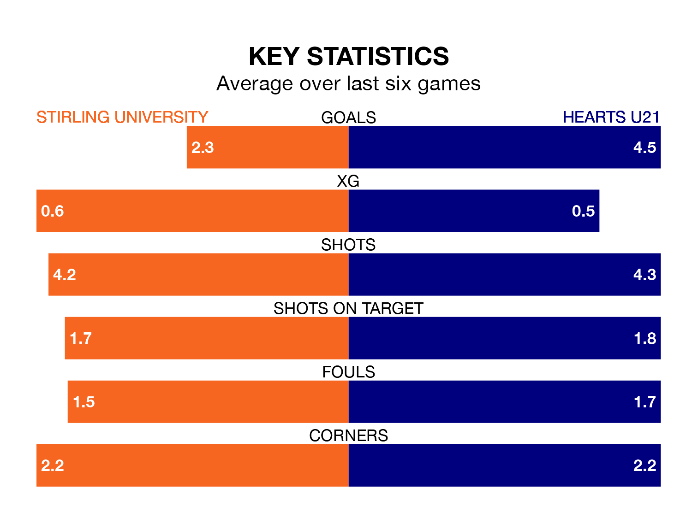

Hearts U21 come to the Forthbank Stadium to play Stirling University on Saturday in great form, having collected 15 points from their last six games.
The visitors have won five and lost one of their last six fixtures, while Stirling University have three wins and two draws.
With 66 goals in 22 games so far this season, Hearts U21 are the league's highest scorers with 3.0 goals per game. And they are conceding fewer than average, letting in 25 goals at a rate of 1.1 per game.
Stirling University, meanwhile, are below average scorers, with 1.5 goals per game, compared to a league average of 1.8. They have conceded 1.3 goals per game.
Hearts are second in the table after 22 games, of which they have won 13 and drawn six, earning 45 points.
The hosts are 12 places behind the away team in 14th, with nine wins and four draws putting them on 31 points.
Stirling University's last match was on January 6, a 1-1 draw against Gretna 2008, with James Russell getting the goal for Stirling University.
Hearts U21 beat Edinburgh University 12-0 last time out, on January 5, with James Wilson (three), Harry Gordon (two), Adam Forrester, Angus Stevenson, Bobby McLuckie, Callum Sandilands, Finlay Pollock, Luke Rathie and Ryan Duncan on the scoresheet.
Updated: 10:50, 10/01/24